Chapter 2 Using Shiny to Manage Workflows
Now that you’ve configured your first Cromwell sever, let’s submit some test workflows to it using the Fred Hutch Shiny app!
Note: especially the first time you set up a Cromwell server, it will be busy for a few minutes setting up the database and doing all the work behind the scenes for you. Once it’s “ready” to listen for workflows it will start “listening” for instructions via the Shiny app (or other methods we’ll discuss later in the course). It may take 2-3 minutes before you can follow the rest of these instructions the first time. The time it takes is much shorter in the future (more like ~1 minute).
2.1 Cromwell app
You can find our Fred Hutch Shiny app here: https://cromwellapp.fredhutch.org/
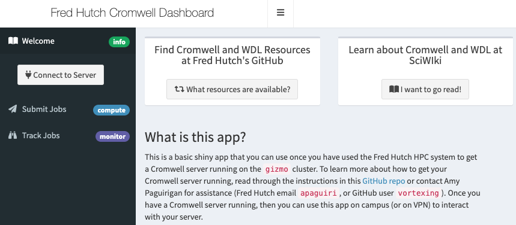
This shiny app will let you use a graphic interface to submit and manage workflows you’ve written in WDL.
2.1.1 Login
While this Shiny app runs all the time, in order for it to know where to look for your particular information, you’ll need to to “login” by clicking the “Connect to Server” button on the left. 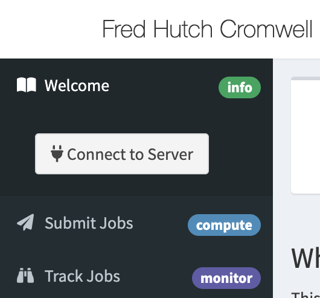
When you click login, a box will appear where you will input your node:port combo from the output of the Cromwell server kickoff process before (it will be in the format of “gizmob5:39071”).

If your server is not yet fully ready to listen for workflows you may see this error result: 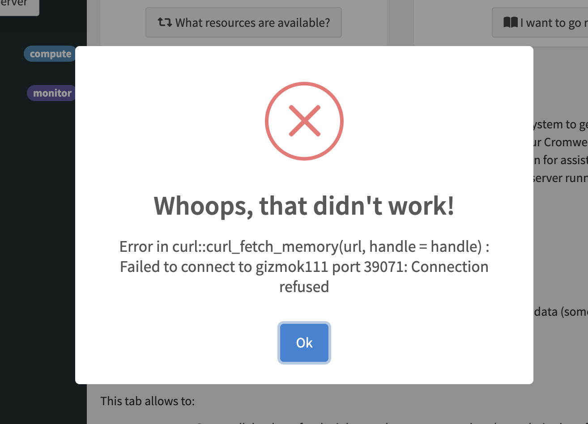
If so, just wait 1-2 more minutes (if it’s the first time you’ve set up a server, or less if it’s a future instance) and try again. Once the Shiny app can talk to your sever, you’ll see this result screen: 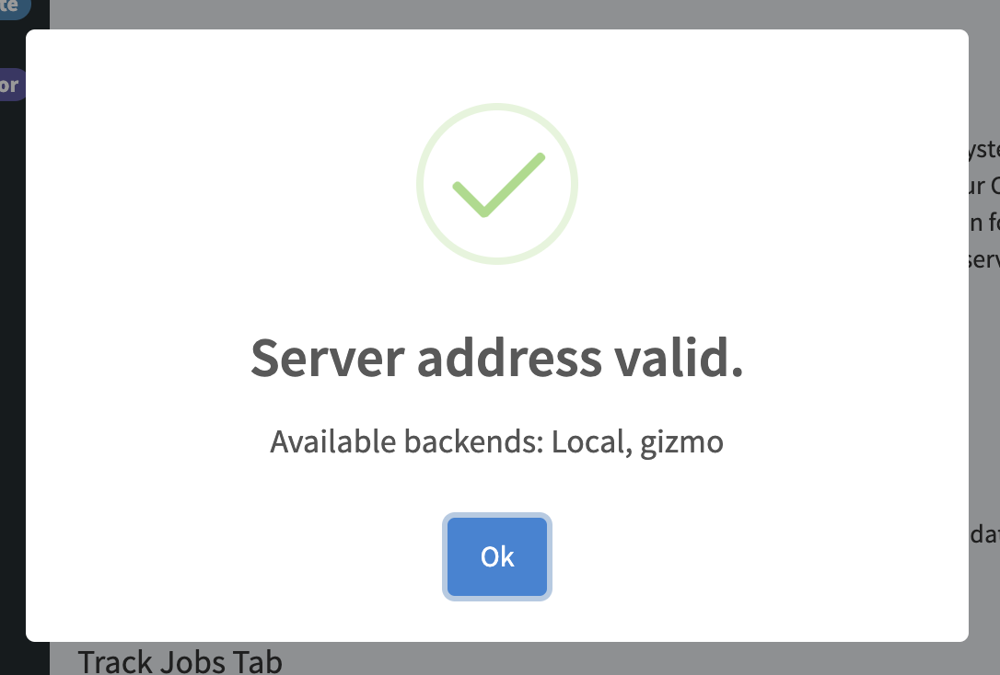
2.1.2 Submit Jobs Tab
Once you’ve connected your server to the Shiny app, you can start by using the “Submit Jobs” tab on the left.
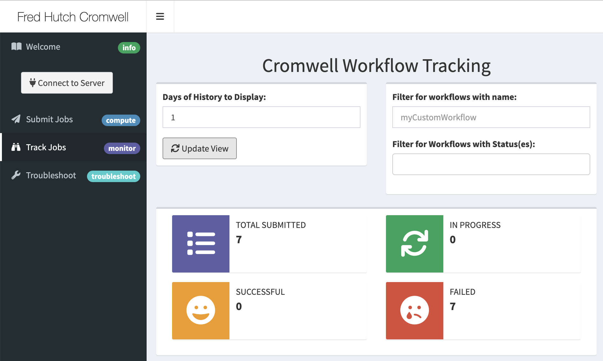
Here you’ll see a series of sections that will allow you to do several things.
2.1.2.1 Validate a workflow
This checks the format of your workflow files to make sure you have a valid file in a known format that Cromwell can iterpret. It does not perform a “dry run” or check to see if any of your inputs are actually available, only that it can interpret what you told it. 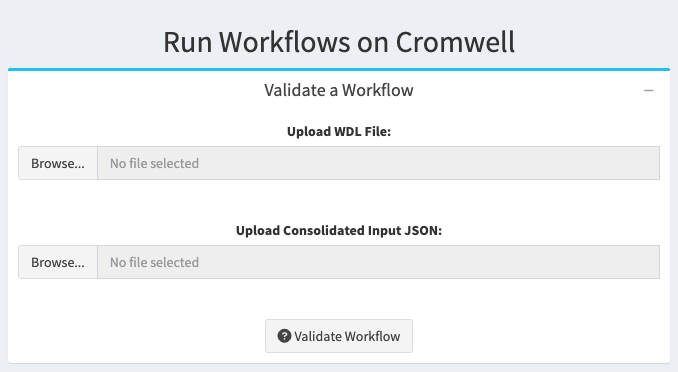
2.1.2.2 Submit a workflow
This will let you upload the files that contain your workflow description (a WDL), and up to two different sets of input lists (in JSON form). You can run a workflow with no input JSON, one input JSON, or two input JSONs (which will be concatenated or the second will overwrite the first if the same variable is declared in both). You can upload a workflow options JSON (which you’ll learn about in future classes), as well as providing text labels of your choosing to workflows if you’d like.
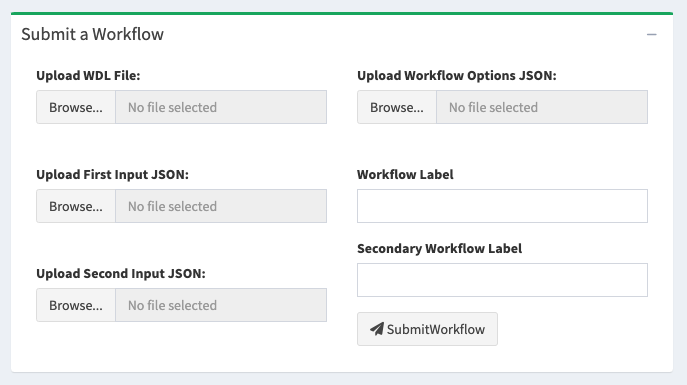
2.1.2.3 Abort a workflow
Sometimes you realize you might just want to kill a workflow. Using the workflow submission id, you can specifically kill workflows by using this box. Note it will take Cromwell some time to coordinate SLURM job cancellations but it will clean everything up for you, it’s just not instant. 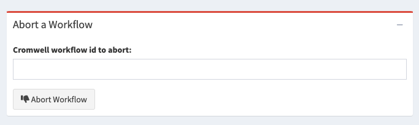
2.1.2.4 Troubleshoot a workflow
Especially in the beginning if you have catastrophic workflow failures and you can’t even figure out what’s going on, you can come back to this Troubleshoot box to retreive the entire, unformatted JSON output of all metadata Cromwell has about your workflow here. You probably are better served by the next tab in the app for checking up on how your workflow is going, but if there’s nothing there that’s helpful, then this box is where you’ll want to go.
> Note: this is not for the faint of heart, but it will give you hints once you get used to understanding what Cromwell is telling you.
2.1.3 Track Jobs Tab
Once you’ve submitted a workflow, you’ll want to track how it’s going in the Track Jobs tab.
2.1.3.1 Workflows of History
Here you’ll see that you can query for as many days of history worth of workflows that you’d like, filter that result (for instance if you have submitted a LOT of workflows and the app is slow) for workflows with a specific name or with specific status(es) (such as failed, suceeded, etc).
Then you’ll see a plot of all the workflows returned and how long they have run, as well as what their status is. 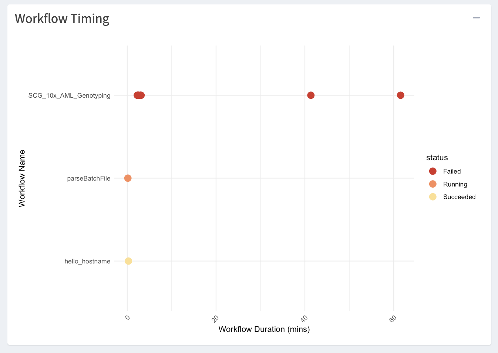
Then you’ll see a table of the metadata about of all the workflows returned. Click on the workflow you’re interested in to populate the rest of the tables. 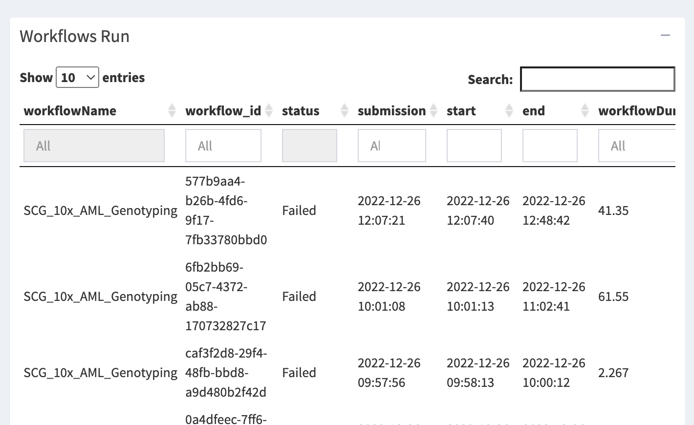
2.1.3.2 Diving into a Workflow
Once you’ve selected a workflow row, you’ll see some summary information about that workflow. 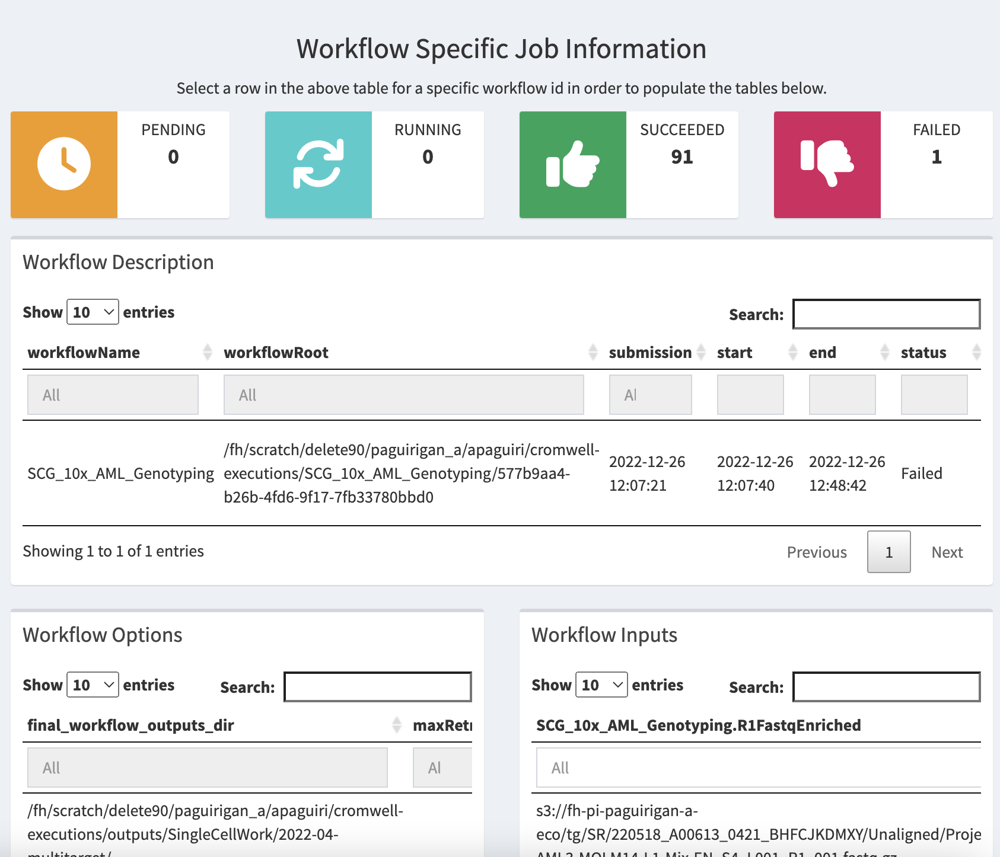
You can see a plot of the timing and outcomes of all the calls in that workflow. 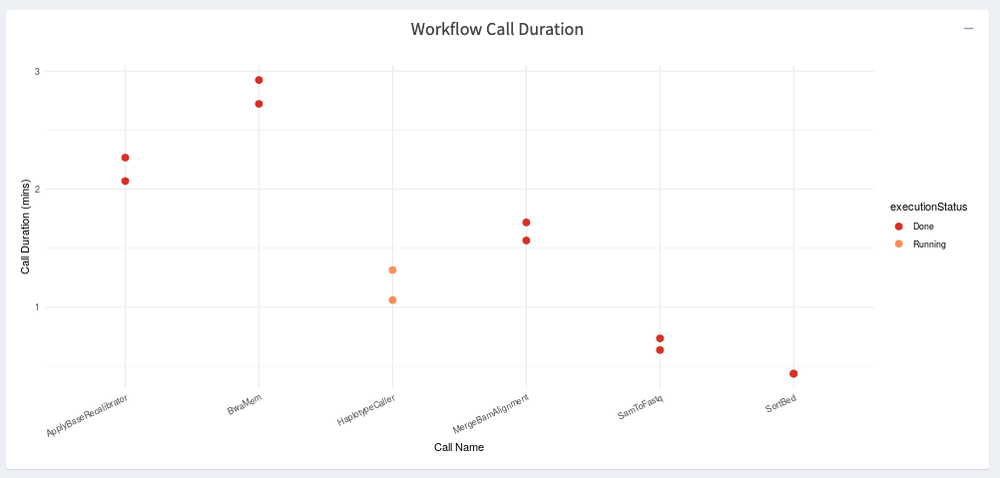
Then there is a table of all of those calls in which you can find a variety of useful information such as the directory where the job is working (callRoot), the SLURM job id it had/has, what computing resources or software environment was used, and what it’s status is.
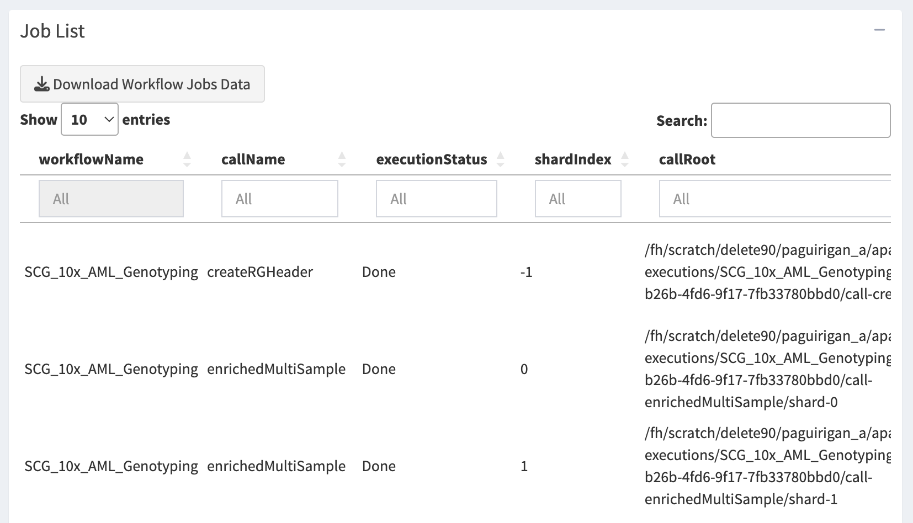
Then you can use the Job Failures nad Call Caching tables to retreive information relevant to those processes by clicking the “Get/Refresh … Metadata” buttons (sometimes these can be quite large, and thus they do not load until you want them).
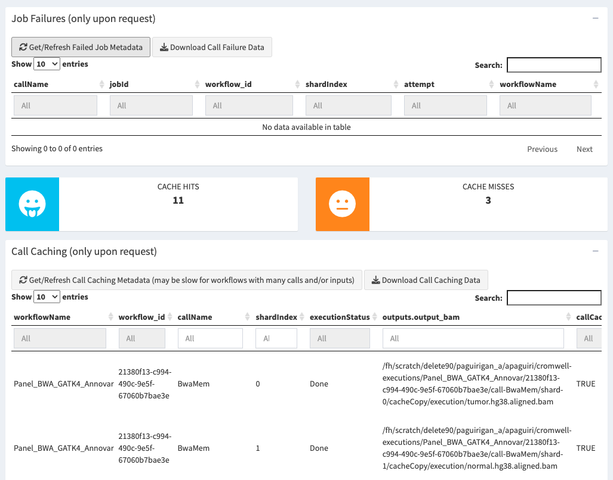
Finally, once a workflow suceeds, Cromwell can tell you (and this Shiny app can help you download) a table of all the outputs to the workflow itself (note this is not every file created, only the ones you specify as the “results” of the workflow overall). This is useful to go find those results and interact with them, archive them, or otherwise copy them to longer term storage for use.
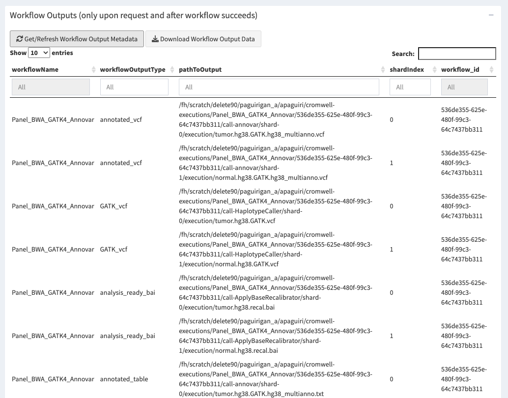
2.1.4 Run Test Workflows
Now that you know how to use the app, it’s time to run a test workflow.
We have curated a number of basic workflows that you can use to test to see if your Cromwell server is set up correctly and for you to test out how working with Cromwell is done. See our Test Workflow folder once your server is up and run through the tests specified in the markdown there.
NOTE: For those test workflows that use Docker containers, know that the first time you run them, you may notice that jobs aren’t being sent very quickly. That is because for our cluster, we need to convert those Docker containers to something that can be run by Singularity. The first time a Docker container is used, it must be converted, but in the future Cromwell will used the cached version of the Docker container and jobs will be submitted more quickly.